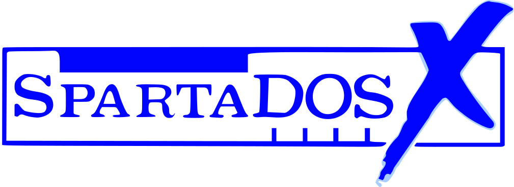

SDX Imager is a tool for customizing SpartaDOS X ROM images. A version for Windows has been available from several years. This version runs in a Web browser. You can edit the default CONFIG.SYS and add or remove files. The customized image can then be flashed to a cartridge.
More information on SpartaDOS X can be found at SDX website.
Bug reports: trub/DLT trub@atari8.info
Credits: Drac030, Mono, Candle, Simius, Stryker
